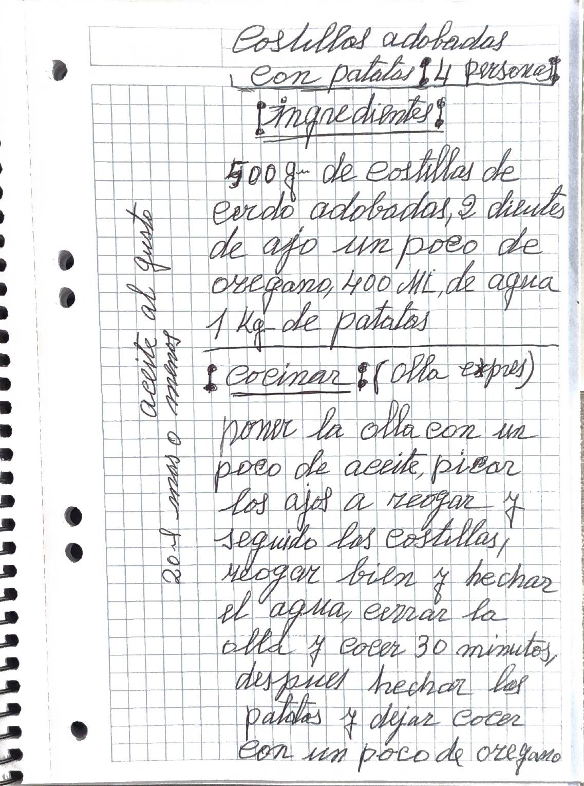
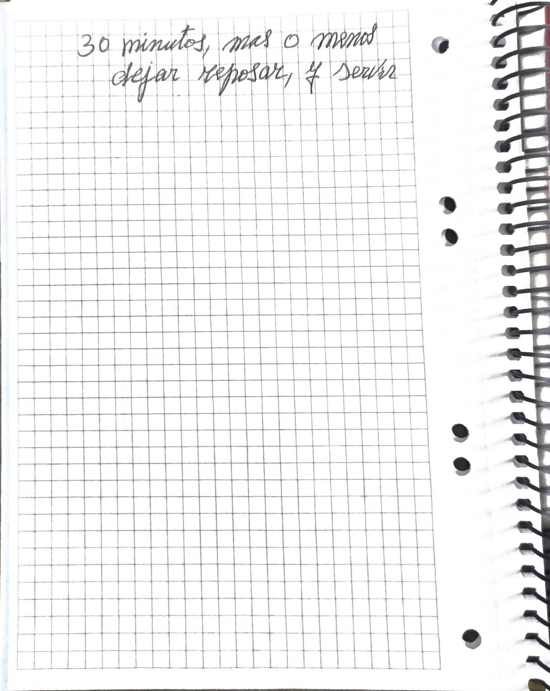
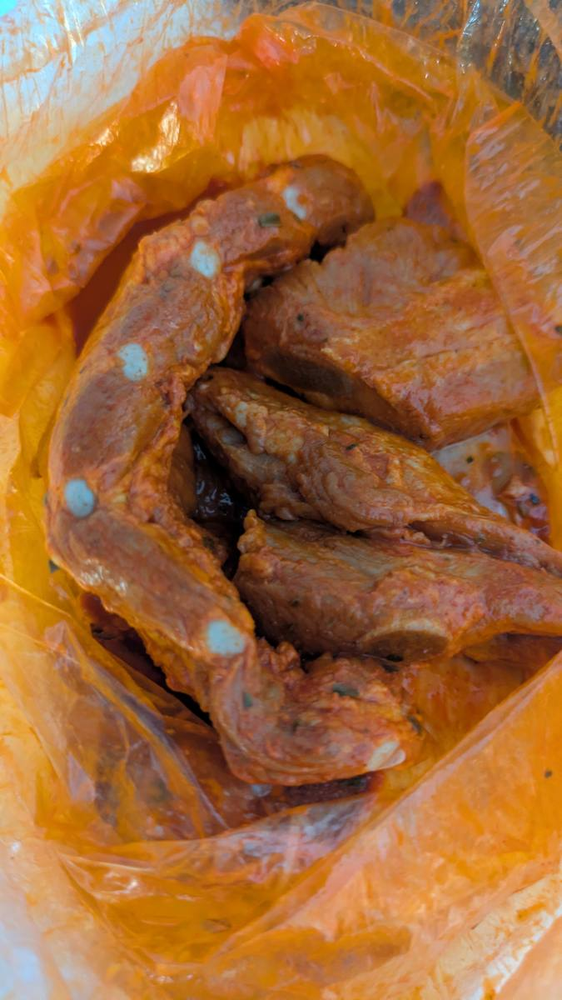

Costillas adobadas con patatas

Versión editada para cocinar. Lo que ella escribió, palabra por palabra, está en «Cuaderno».
Ingredientes
Preparación
- Poner la olla con un poco de aceite. Picar los ajos y rehogar, y seguido las costillas.
- Rehogar bien y echar el agua.
- Cerrar la olla y cocer 30 minutos.
- Después echar las patatas y dejar cocer con un poco de orégano 30 minutos, más o menos.
- Dejar reposar y servir.
Avisos y dudas
- Cantidad de costillas: 500 g, confirmado por Raul (la primera cifra estaba corregida encima).
- Paso 4: no dice si las patatas se cuecen con la olla cerrada otra vez o destapada, ni cómo se cortan.
- No menciona la sal (puede que el adobo ya la lleve; no lo añado).
- «mas o menos» puede ir con los 30 minutos o con el reposo; la coma está antes, y lo he unido a los 30 minutos.
Tal como lo escribió


Transcripción fiel, con su ortografía. Lo que va entre corchetes son aclaraciones de la transcripción.
Costillas adobadas con patatas (4 personas)
(ingredientes)
500 gr. [la primera cifra está escrita encima de otra; Raul confirma 500] de costillas de cerdo adobadas, 2 dientes de ajo un poco de oregano, 400 Ml. de agua 1 Kg. de patatas
(Cocinar) (olla expres)
poner la olla con un poco de aceite, picar los ajos a reogar y seguido las costillas, reogar bien y hechar el agua, cerrar la olla y cocer 30 minutos, despues hechar las patatas y dejar cocer con un poco de oregano 30 minutos, mas o menos dejar reposar, y servir
aceite al gusto / 20 ml mas o menos
En la cocina

